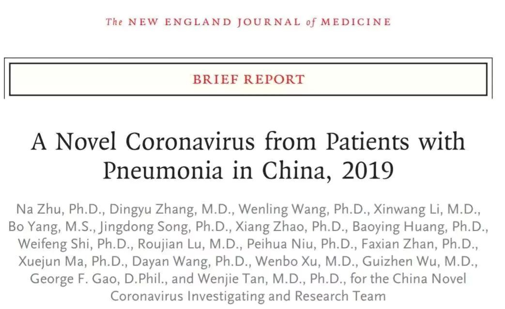

肺炎日记|1月31日：疾控、红会陷争议，防疫环节何处失守？
原文链接 备份链接 【财新网】（记者 黄蕙昭 综合）2020年的第一个月在争议中迈向尾声。防疫战滚滚硝烟下，“防控”和“救援”条线上的两大职能主体，今日正面临激烈的失职指控：一面是疾控中心发文披露新冠病毒早期流行病学数据，似早已获悉“人 …

记者 | 肖文杰、许冰清
编辑 | 陈 锐
1月30日发表于《新英格兰医学杂志》（NEJM)的一篇关于新冠病毒的论文将中国国家疾控中心变成舆论焦点。

这篇论文名为《新型冠状病毒感染肺炎在中国武汉的初期传播动力学》，由中国国家疾控中心领衔，包括湖北省疾控中心、香港大学等十几个机构的专业人员共同完成。
首先想强调一点，这篇论文有一个重要的结论被忽略了。
根据截至1月22日的最早425例确诊病例数据，作者认为，每例患者平均将感染传给了另外2.2人。一般而言，只要R0大于1，疫情就会不断加剧，而疾病控制措施的目标是将再生数降低至1以下。《新英格兰医学杂志》中文版NEJM医学前沿在发表论文的中文译本时表示，随着疾控措施的不断加强，有理由相信目前的R0小于2.2。
R0，是一个数学术语，医学上可表示传染病的传染性，也被称为繁殖数字。R0值表现当一个传染病到了一个人身上之后，平均能传染给其他多少人。其中被传染的人指没有被感染过，没有接种过相关疫苗的人。
此外，这篇论文引起的最大争议是，疾控中心科学家们，没有第一时间把他们的发现公开，使得疫情防控措施滞后。
事后，国家疾控中心主任高福、副主任同时也是论文作者之一的冯子健各自都接受了媒体采访，对外表达的核心观点有二：
1、论文所用数据截至1月22日，且结论为流行病学回顾性研究调查，并非临床诊断；
2、国家疾控中心并未瞒报数据。
从目前所知的公开信息仍无法推断疾控中心是何时明确“人传人”这一重要病毒特征以及将它何时、如何上报给国家卫健委，如无意外，该时间线将永远是个黑盒子。
但我们仍可以通过追问一些问题去接近真相。比如，当面临这类紧急发生的公共卫生事件，一个国家的疾病控制系统是如何运作的？疾病相关信息又会如何流转？疾控中心究竟在其中有哪些权责以及扮演什么角色？
《第一财经》YiMagazine采访了中国疾控中心原副主任杨功焕教授。2003年SARS疫情之后，她主管并负责建立了全国范围的传染病网络直报系统。她从机制的角度给出了她的答案。
同时，我们也从这篇备受关注的论文以及疾控中心的公开回复中提炼了核心事实。多方参照之后，相信愿意思考的读者可以得出相对明确的判断。
01
疾控中心是个什么机构？
中国疾病预防控制中心即CDC(Chinese Center for Disease Control and Prevention)，是一个隶属于卫健委、由国家财政全额拨款的事业单位。
监测传染病的发生、实施流行病学调查、搜集信息、分析预测、为防治决策提供科学依据、参与处理重大疫情和突发公共卫生事件，这些都属于它的职责。国家、省市、区县，都有各级的疾控中心，隶属于各级卫健委，地方的疾控中心主要向当地的卫健委和政府汇报。

中国的疾控体系始于1953年的卫生防疫体系。2002年，“中国疾病预防控制中心”正式成立。2003年的“非典”疫情暴露出我国疾控体系的一些薄弱环节，在此后的反思过程中形成了原卫生部第40号部长令《关于疾病预防控制体系建设的若干规定》，规定按国家级、省级、市级和县级四级设立疾病预防控制机构。
核心事实
举例而言，湖北省、武汉市疾控中心分别为湖北省、武汉市卫生健康委委员会直属事业单位。对于武汉市疾控中心这一市级疾控机构而言，其主要职责包括“组织开展本地疾病爆发调查处理和报告”，以及“指导辖区内医疗卫生机构传染病防治工作”。
02
CDC如何发现新出现的传染病病例？
从2003年SARS疫情之后，疾控中心开始建立一套覆盖所有医院乃至基层卫生中心的中国疾病预防控制信息系统。简单而言，各地医院的医生发现传染病案例，根据规定，就要通过网络系统直接上传这一病例，一旦上传，根据权限，各级疾控中心都可以看到这个病例。所谓权限，就是每个地区的疾控中心可以看到本地的疫情——就是所谓的直报系统。这套系统中也设置了针对不明原因肺炎PUE（Pneumonia ofUnknown Etiology）的直报。截至2011年年底，该系统已覆盖全国100％的疾控机构、98％的县级及以上医疗卫生机构和88％的乡镇卫生院。
核心事实
病例信息将经历大致如下的报告流程：首诊医生或其它执行职务的人员负责填写报告卡（并按要求电话报告）——疫情管理人员收卡、登记——疫情管理人员完成网络直报。
不同级别的传染病，报告时限要求不同。在1月20日前，新型冠状病毒肺炎未被确认为“法定传染病”，《传染病防治法》对这一类情况的报告时效没有明确规定，但一般需要在24小时内报告。
病例通过报告进入疾控信息系统的最大前提，还在于首诊医生的医学判断。以被列入“甲级传染病”、实行主动监测的鼠疫为例：2019年，中国内蒙古地区曾有肺鼠疫患者于10月25日发病，但早期诊疗中曾被反复误诊为“大叶性肺炎”，此后转诊至北京；直到11月11日，其患鼠疫的确诊信息才由北京市疾控中心做出。此后，内蒙古自治区成立了应急领导小组，严查鼠疫疫情。
02
什么是PUE直报？
“不明原因肺炎”（PUE）是SARS事件后，原卫生部为了更好地筛查及处理可能出现的SARS、人禽流感等其他传染性呼吸道疾病而提出的一个词。
PUE直报为前述中国疾病预防控制信息系统的功能之一，它的触发有一定的条件。当出现符合设定条件的病症时，医院需要上报不明原因肺炎的病例。杨功焕教授表示，中国疾控中心有一组人专门监测该系统，每天写分析报告。
核心事实
并非所有不能明确诊断的肺炎都能被称为“不明原因肺炎”，“不明原因肺炎”的定义包括以下4条：
(1)发热(腋下体温≥38℃)；
(2) 具有肺炎的影像学特征；
(3)发病早期白细胞总数降低或正常，或淋巴细胞分类计数减少；
(4)经规范抗菌药物治疗3-5 天，病情无明显改善或呈进行性加重。
目前按照规定，发现符合“不明原因肺炎”定义的病例后，医疗机构要在12小时内组织本单位专家组进行会诊和排查。仍不能明确诊断的，应立即填写传染病报告卡，注明“不明原因肺炎” 并向疾控系统网络直报。
杨教授强调，这套网络直报系统并不是逐级报告，而是只要医院在网络系统中点击报告了病例，中国疾控中心第一时间就应该收到，“在全国所有的地方，只要下边报告、点了，哪怕是点一例，我们都能在系统上第一时间看到。”
04
这套直报系统在实际操作中是否会面对挑战？
当然会。比如出现不明原因的肺炎，基层医生要有这个判断，再上报，这个做判断的过程并不容易。因为冬春季节原本就是肺炎多发的时间段。对临床医生来说，治疗仍然是第一位的。疾控中心日常的一个工作，便是检查各医院的病例，看是否有应该上报但没有上报的病例。
05
发现传染病疫情后，疾控中心会怎么办？
完成网络直报后，县级疾控机构须于24小时内对病例完成初步流行病学调查，同时收集疫情信息。
同时，县级疾控机构还需在接到病例报告后的24小时内组织专家会诊，并逐级向上级 (市级、省级) 备案，接受上级审核。若任何一级别的专家无法确诊，将交由上级会诊，上级的会诊期限同样是接到下级报告后的24小时内。不能排除 SARS 和人禽流感的病例，需将采集相关临床样本进行实验室检测。
在会诊的同时，医疗机构需立即将病例收治入院，按呼吸道传染病隔离治疗，医务人员也需采取个人防护措施。
如果疫情严重，疾控中心还需上报给所在行政区的卫健委。什么样的疫情需要报给当地卫健委，当地卫健委又应将哪类疫情上报当地政府，这都没有确切的规定。不同的传染病，感染人数也各不相同，这是一个经验问题。但疾控中心的报告中会包含疫情的具体情况，也会给出防控建议。
06
疾控中心可以公布疫情信息吗？
《传染病防治法》第38条规定，传染病爆发、流行时，国家卫健委负责向社会公布传染病疫情信息，并可以授权省卫健委向社会公布本行政区域的传染病疫情信息，具体需公布信息包括突发公共卫生事件和传染病疫情性质、原因、发生地及范围、伤亡及涉及的人员范围、处理措施和控制情况等信息。
1月20日前，新型冠状病毒肺炎未被确认为“法定传染病”，而在《全国不明原因肺炎病例监测、排查和管理方案》中，对于此类“不明原因肺炎”的疫情信息，并没有规定相应的社会通报制度。
07
在这次疫情的爆发初期，疾控中心报告了吗？
杨功焕教授认为，国家疾控中心应该向国家卫健委报告了，武汉市疾控也应该向武汉卫健委报告了，“2019年12月底，武汉就已经有27例病例，并且怀疑人传人，这件事放在任何城市的疾控中心和卫健委那里，都属于很严重的事。不可能瞒报。我们都在这个位子坐过，瞒报是什么责任？”
而且，12月底，武汉市卫健委医政医管处也确实发布了病例数字，并且向下辖医院发了文件。
但1月30日NEJM发表的由国家疾控中心专家主要参与的引发网络情绪的论文显示，其所讨论的早期病例信息是通过“不明原因肺炎”网络报送系统获得的。自1月3日起，武汉的不明原因肺炎疫情即遵照中国疾控中心制定的流行病学监测方案，以识别潜在病例。

中国武汉最早的425个新型冠状病毒（2019-nCoV）感染肺炎（NCIP）确诊病例的发病情况。
1月8日之后的发病率下降可能是由于诊断时间和实验室确诊时间的延迟。中国CDC代表中国疾病预防控制中心、NHC代表中华人民共和国国家卫生健康委员会，PCR代表聚合酶链反应，WHC代表武汉市卫生健康委员会，WHO代表世界卫生组织。图片来源：NEJM
然而1月16日即有医生因感染而住院，中国疾控中心的副主任冯子健知道这一消息，却是和公众一样，通过1月20日钟南山在央视接受的采访。
1月31日，《新京报》采访了中国疾控中心副主任、NEJM论文通讯作者冯子健。冯子健亦否认了“中国疾控中心隐瞒数据”的说法，称“从最早开始，就把它当作有高度传染性的疾病来对待，第一时间采取了密切接触者管理等措施。”
不过，冯子健同时表示，“数据上报的层级很多，包括国家级、省级、市级、区级，从区一级承担疫情调查任务的部门开始，数据上报有个过程。”且新型冠状病毒未列入“法定传染病”之前，无法使用2个小时直达国家层面的网络直报系统，“调整网络直报系统设置、人员培训需要一个过程。”
这一表态中提及的疫情上报多层级与中国疾病预防控制信息系统已经建立的系统直报构成了冲突。若按照冯子健的表述，则说明我国出于吸取SARS教训而建立的传染病例直报系统，至少在此次新冠疫情的防控中并未发挥关键作用。
08
报告了之后，谁来管控疫情？谁来公开信息？
一个城市要防治一次传染病疫情，需要政府统筹调动各方资源，卫健委是其中一部分。它能要求医院做好防控措施，而独立于卫健委的医保局，则需要提供医保报销方面的支持措施，至于基层的防控，那就需要各单位和基层政府。各级卫健委负责的信息公开，当然也是其中的一部分。
本文版权归第一财经所有，
未经许可不得转载或翻译。

原文链接 备份链接 【财新网】（记者 黄蕙昭 综合）2020年的第一个月在争议中迈向尾声。防疫战滚滚硝烟下，“防控”和“救援”条线上的两大职能主体，今日正面临激烈的失职指控：一面是疾控中心发文披露新冠病毒早期流行病学数据，似早已获悉“人 …
原文链接 备份链接 【财新网】（记者 黄姝伦 赵今朝）新型冠状病毒感染肺炎疫情还在爆发式增长，武汉1月23日上午10点宣布交通封城。官方披露，截至1月23日24时，全国确诊病例达850例， 26例死亡绝大部分集中在武汉市，其中河北省出现首 …
原文链接 备份链接 【财新网】（记者 刘登辉）截至1月22日，全国新型冠状病毒确诊案例已达548例。病例数量近几日迅速增加，34个省级行政单位仅有新疆、西藏、青海、甘肃、内蒙古、陕西未出现确诊和疑似案例。防控形势十分危急。值得关注的是， …
原文链接 备份链接 截至1月21日24时，13个省（区、市）累计报告新型肺炎确诊病例440例。 专家认为，1月18日以来确诊病例迅速增加，有疫情由“一代病例”转为“二代病例”的因素。 此次冠状病毒肺炎疫情传播，可明确是二代病例的，迄 …
原文链接 备份链接 非常时期，武汉成了全国人民挂念、祈福的城市。封城后，武汉人民的真实生活是什么样？ 正和岛自1月26日起特别推出《叶青：我在武汉疫区的第N天》专栏。叶青是一位定居武汉40年的市民，也是一名学者和官员。接下来的一段时间，他 …